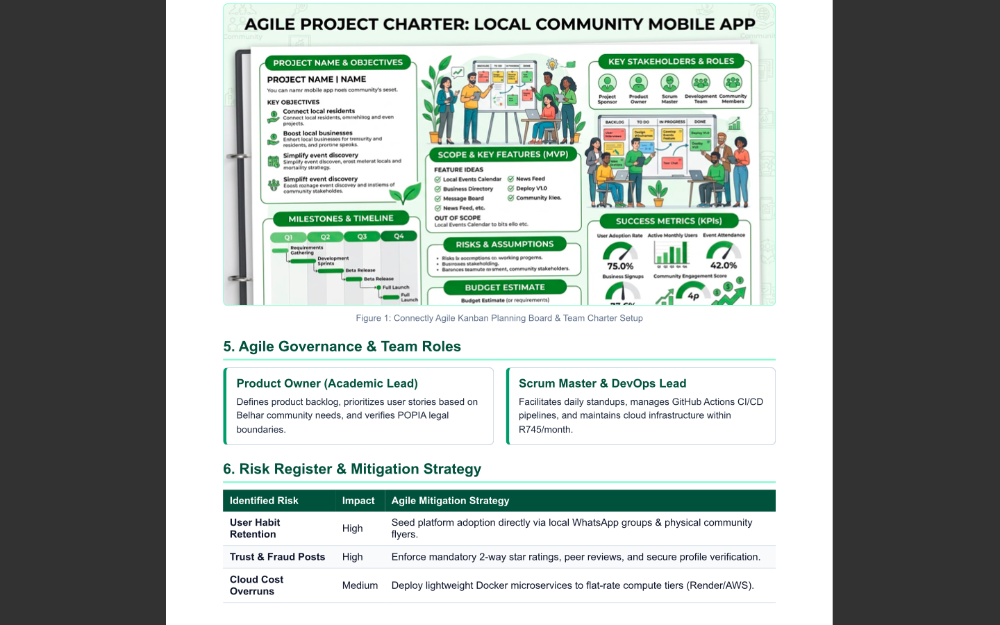
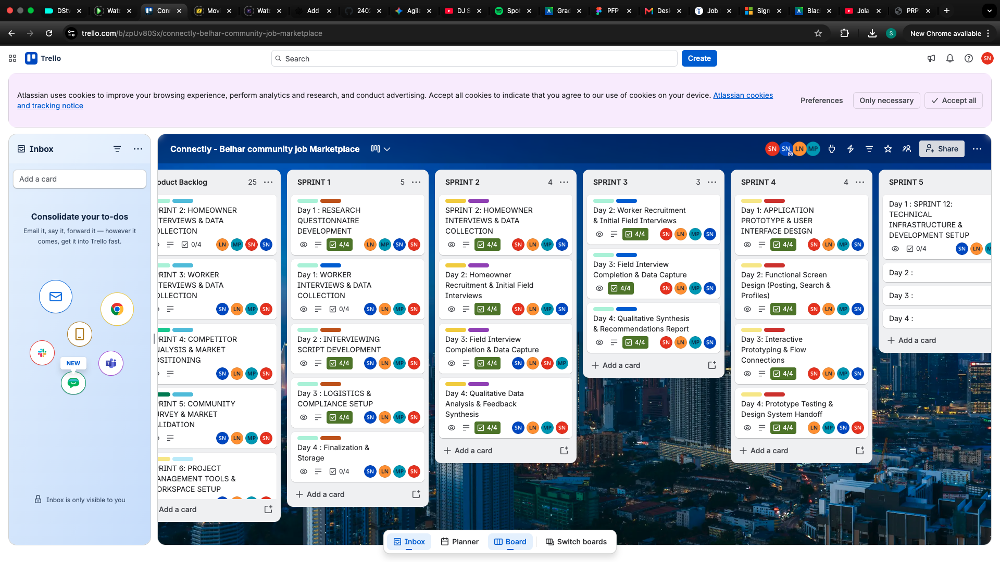
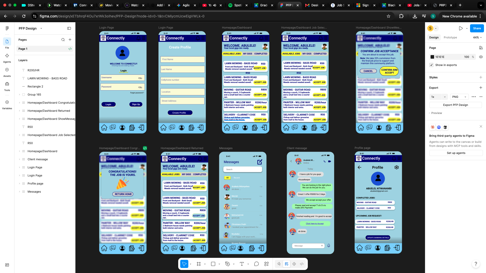
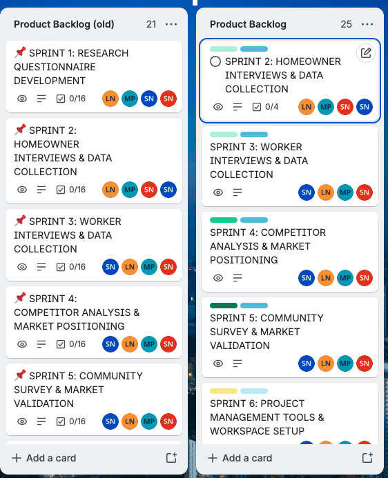
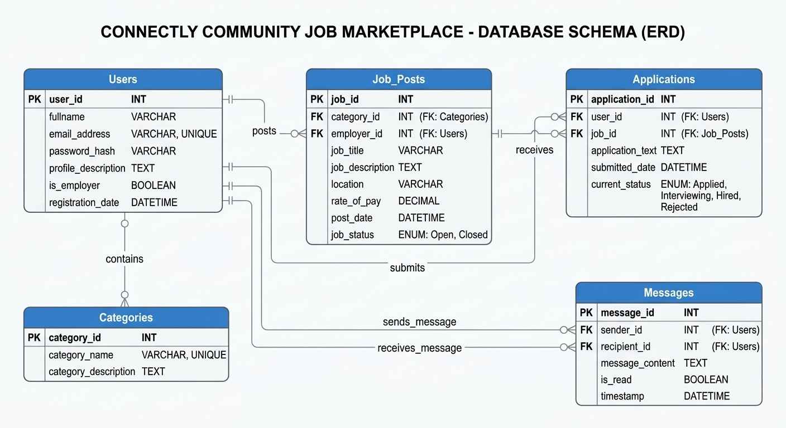
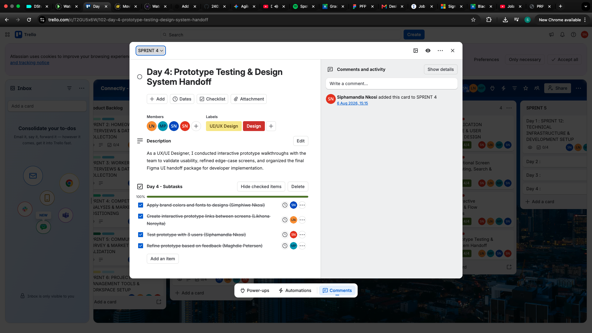

Collect
Gather project records, screenshots, links, and dated artefacts.
PROJECT PRESENTATION 3 • ASSESSMENT 2 • OCTOBER 2026
A collection of project artefacts, evidence, and reflections based on my Entrepreneurial WIL Project (Connectly), showing how I planned work, collaborated, tracked progress, and learned through Agile practices.
PORTFOLIO OVERVIEW
This portfolio follows the assessment brief's e-portfolio approach: collect relevant artefacts, select evidence that demonstrates learning, reflect on development, and connect the artefacts into a coherent account based on our Entrepreneurial WIL Project.
Gather project records, screenshots, links, and dated artefacts.
Choose evidence that directly supports each section.
Explain what the evidence shows and what you learned.
Show how the artefacts fit together across the project.
A social contract and project agreement defining our Entrepreneurial WIL Project's purpose, team roles, working agreements, and operational boundaries to align daily execution.

Figure 1.1: Co-created Agile Project Charter for the Connectly Entrepreneurial WIL Project.
Creating the Agile Project Charter for our Entrepreneurial WIL Project established explicit accountability across the team. As Database Developer, defining clear boundaries around data contracts early prevented schema mismatches during sprint releases. This artefact connects directly to our Sprint Backlog execution by providing a baseline for resolving architectural blockers quickly.
Short, simple descriptions of software features from the end-user's perspective, broken down into granular developer tasks for our WIL Project.
| Story ID | User Story | Acceptance Criteria | Task Breakdown |
|---|---|---|---|
| US-01 | As a job seeker in Belhar, I want to filter local job listings by skill category so that I can quickly find relevant work. | • Category dropdown functional • DB query response < 200ms • Dynamic UI updates |
1. Design SQL index for job categories. 2. Build REST endpoint. 3. Connect search UI components. |
| US-02 | As an employer, I want to post a new job with budget details so that local workers can apply. | • Form input validation • Secure database persistence • Instant submission feedback |
1. Implement job_posts schema. 2. Build API validation logic. 3. Construct web form in React. |

Figure 2.1: Entrepreneurial WIL project user stories broken into technical tasks on Trello.

Figure 2.2: Figma UI wireframe corresponding to User Story US-01.
Structuring requirements as user stories ensured that feature implementations remained user-centric. Translating user stories into database and API tasks ensured that database schemas directly supported real community needs in Belhar rather than being built as isolated technical components.
A prioritized list of features, enhancements, and system requirements managed via MoSCoW prioritization for Connectly.
| Priority | Item ID | Feature Description | Story Points |
|---|---|---|---|
| Must Have | PB-01 | User Authentication & Profile Management (Employers & Job Seekers) | 8 |
| Must Have | PB-02 | Job Posting Creation & Storage Engine | 5 |
| Must Have | PB-03 | Search & Filter Engine for Local Opportunities | 5 |
| Should Have | PB-04 | In-App Messaging between Employers and Applicants | 8 |

Figure 3.1: MoSCoW prioritized Product Backlog workflow for Connectly.

Figure 3.2: Relational ER diagram underpinning core backlog features.
Managing the Product Backlog demonstrated the importance of continuous backlog grooming. MoSCoW prioritization balanced user value against technical complexity, ensuring core database architectures were prioritized ahead of dependent frontend components.
An actionable plan outlining specific task execution required to achieve the iteration goal during our WIL sprint.
Goal: Deliver a functional MVP core enabling local job seekers in Belhar to search, filter, and view active job listings.

Figure 4.1: Active Sprint Backlog board showing tasks in To Do, In Progress, and Done.
The Sprint Backlog bridged strategic goals and daily execution. Having predefined SQL models ready at sprint start enabled backend development to proceed without delays, demonstrating how architectural preparation drives sprint velocity.
Tracking daily stand-ups, progress, sprint reviews, and retrospectives across our WIL project cycle.
Completed: Normalized SQL schemas for job filtering.
In Progress: Query optimization and indexing for high-frequency search.
Blockers: Finalized JSON payload specs with integration developer.

Figure 5.1: Documented daily stand-up logs and sprint retrospective notes.
Maintaining the Agile Logbook maintained operational transparency throughout our Entrepreneurial WIL Project. It ties together the Project Charter, Backlogs, and User Stories into a clear record of project execution and personal development as a Database Developer.